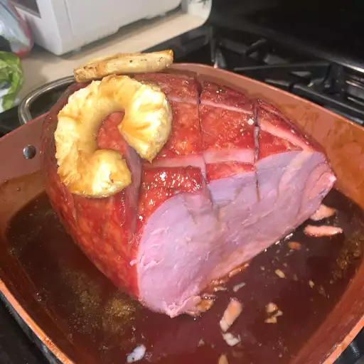

Easter Ham

That MEAT
This is a family favorite that we make year-round.
Prep Time:
15 mins,
Cook Time:
1 hrs,
Total Time:
1 hrs 15 mins,
Servings:
20,
Yield:
20 servings
Ingridients
- 1 (7 pound) boneless ham
- 2 cups brown sugar
- 3 tablespoons prepared yellow mustard, or as needed
- 1 (8 ounce) can pineapple rings in juice, drained and juice reserved
- 1 cup honey
Steps:
- Preheat oven to 350 degrees F (175 degrees C).
- Score ham by making 1/2-inch deep diagonal cuts, creating a diamond pattern; transfer ham to a roasting pan.
- Mix brown sugar with enough yellow mustard to make a smooth, pourable sauce.
- Pour reserved pineapple juice over ham, followed by the honey.
- Pour brown sugar mixture over honey and arrange pineapple rings decoratively atop ham.
Secure pineapple rings with toothpicks.
- Bake in the preheated oven until diamond pattern on ham splits open, 1 to 1 1/2 hours.
Baste ham every 15 minutes with pan drippings.
Go Back